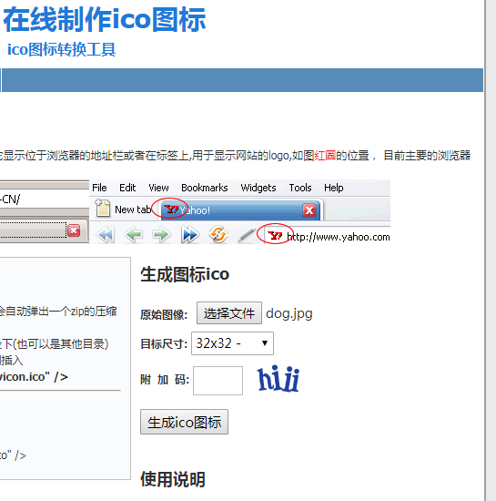
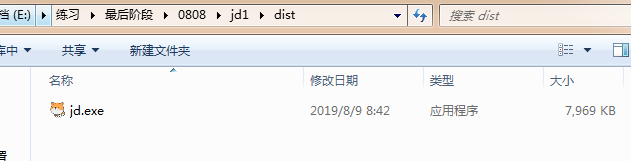
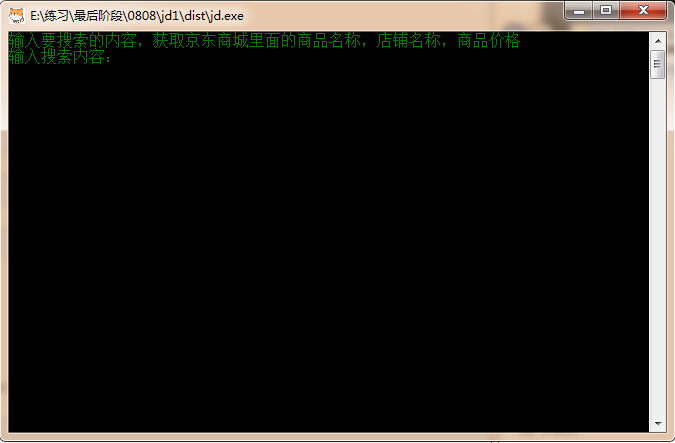
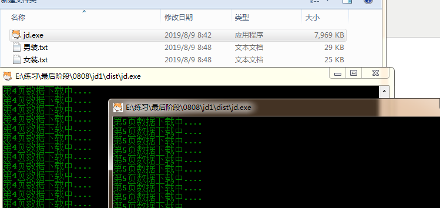
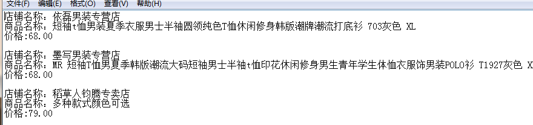

本文爬取内容，输入要搜索的关键字可自动爬取京东网站上相关商品的店铺名称，商品名称，价格，爬取100页（共100页）
代码如下；
import requests
import re
# 请求头
headers = {
'User-Agent': 'Mozilla/5.0 (Windows NT 6.1; WOW64) AppleWebKit/537.36 (KHTML, like Gecko) Chrome/65.0.3325.181 Safari/537.36'
}
def get_all(url,key):
for page in range(1,200,2):
params = {
'keyword':key,
'enc':'utf-8',
'page':page
}
num = int((int(page)+1)/2)
try:
response = requests.get(url=url,params=params,headers=headers)
# 转码
content = response.text.encode(response.encoding).decode(response.apparent_encoding)
data_all = re.findall('<div class="p-price">.*?<i>(.*?)</i>.*?<div class="p-name p-name-type-2">.*?title="(.*?)"'
'.*?<div class="p-shop".*?title="(.*?)"',content,re.S)
for i in data_all:
with open(key + '.txt', 'a+', encoding='utf-8') as f:
f.write('店铺名称：' + i[2]+'\n'+'商品名称：'+i[1]+'\n'+'价格:'+i[0]+'\n\n')
print('第'+str(num)+'页'+'数据下载中....')
except Exception as e:
print(e)
if __name__ == '__main__':
print('输入要搜索的内容，获取京东商城里面的商品名称，店铺名称，商品价格')
key = input('输入搜索内容：')
url = 'https://search.jd.com/Search?'
get_all(url,key)打包成.exe可执行文件。
需要用到pyinstaller包pip下载；
pip install pyinstaller在线制作一个.ico图标，用来当程序图片，把图标和程序放在同一个文件夹下，

在.py文件目录下打开命令行窗口，执行打包命令；
E:\练习\最后阶段\0808\jd1>pyinstaller -F -i dog.ico jd.py出现successfully表示打包成功；
27525 INFO: Building EXE from EXE-00.toc completed successfully.可执行程序在当前文件夹下的dist文件夹下；

运行效果；

可同时执行多个程序；

输出结果；

done。